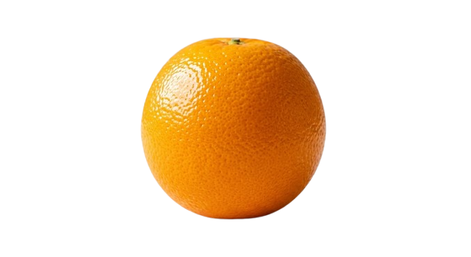
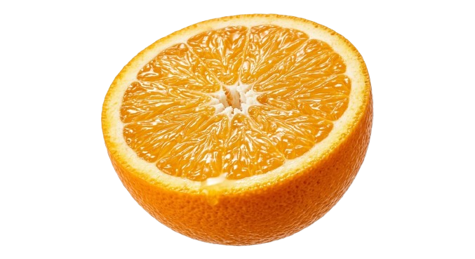
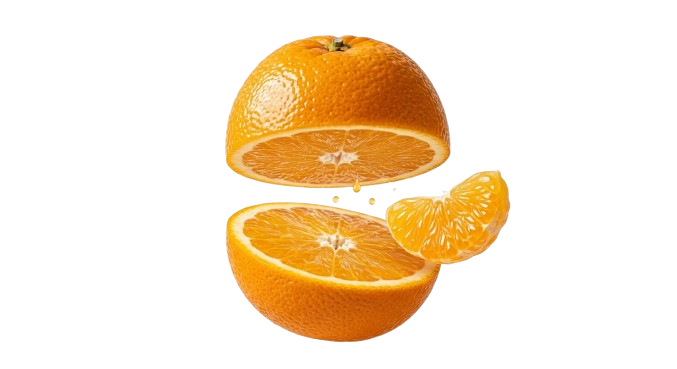
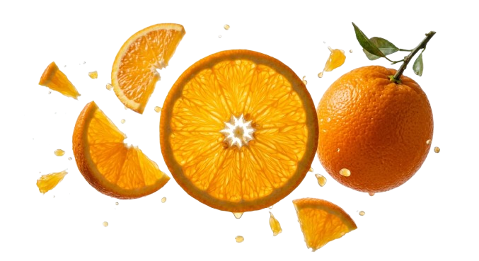
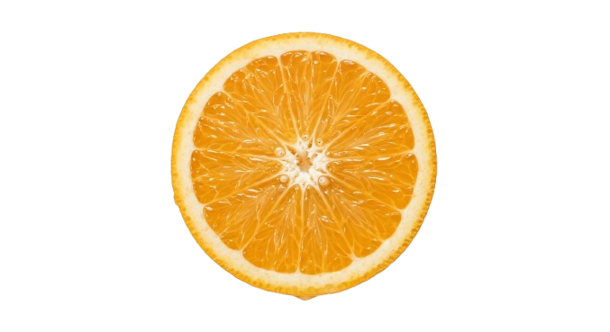
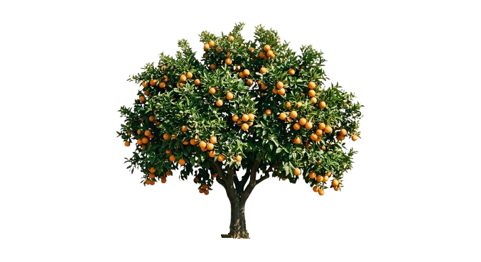
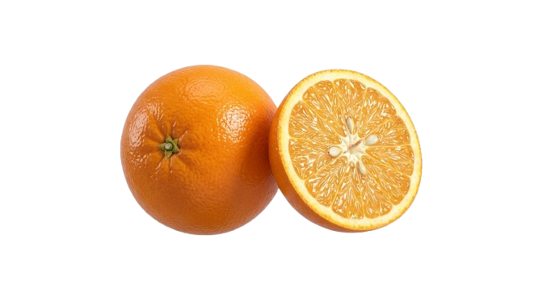

Flavor balance
Oranges deliver a precise mix of sweetness and acidity that feels refreshing in every bite. That balance also makes them reliable in juices, salads, desserts, and glazes.
Citrus knowledge for growers and enthusiasts
From sunlit groves to kitchen tables, this page explores what makes oranges a standout fruit: bright aroma, resilient cultivation, nutrition-rich flesh, and a long seasonal story worth celebrating.

Why oranges stand out

Oranges deliver a precise mix of sweetness and acidity that feels refreshing in every bite. That balance also makes them reliable in juices, salads, desserts, and glazes.

For growers, oranges reward patient care with strong market demand. Tree health, water management, and harvest timing shape quality more than any single trick ever could.

Oranges fit into breakfast routines, savory cooking, and post-work snacks. Their aroma, zest, and juice make them one of the most adaptable fruits in the kitchen.
Orange facts
Tap each item to open the details. The content is written for quick scanning and deeper reading.
Color alone is not the full story. A ripe orange usually feels dense for its size, smells bright near the stem, and has a peel that releases citrus oils when gently pressed. Texture, weight, and season often tell the story better than the exact shade of the skin.
Oranges are valued for vitamin C, hydration, and naturally occurring plant compounds that support a balanced diet. They are easy to include in breakfasts, snacks, and simple recipes without requiring much preparation.
Consistent sunlight, well-managed irrigation, soil health, and pest monitoring matter most. Strong trees depend on seasonal care, steady pruning, and careful harvesting practices that protect fruit quality from field to basket.
Interactive gallery



Contact
Use the form to start a conversation about cultivation tips, fruit selection, or any orange-focused topic you want to explore further.